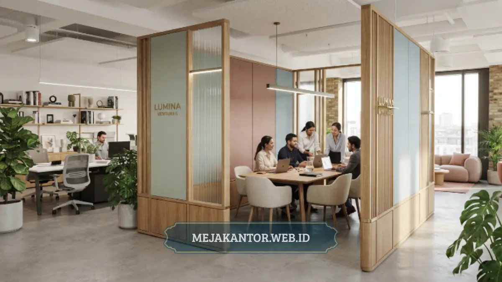

Kegunaan partisi kantor untuk efisiensi ruang adalah membagi area kerja secara modular sehingga setiap meter persegi kantor dapat dimanfaatkan secara maksimal tanpa perlu konstruksi dinding permanen. Selain fungsi praktis tersebut, partisi juga berperan besar dalam membentuk tampilan kantor yang lebih rapi, terstruktur, dan profesional. Kombinasi efisiensi ruang dan nilai estetika inilah yang membuat partisi menjadi salah satu elemen furnitur paling strategis bagi bisnis yang sedang berkembang.
- Partisi kantor bersifat modular dan mudah disusun ulang sesuai kebutuhan.
- Membantu memaksimalkan kapasitas ruang kerja yang terbatas.
- Meningkatkan kerapian dan kesan profesional di mata klien maupun mitra bisnis.
- Lebih hemat biaya jangka panjang dibandingkan renovasi dinding permanen.
Daftar Isi
Bagaimana Partisi Kantor Membantu Efisiensi Penggunaan Ruang Kerja?
Partisi kantor membantu efisiensi ruang kerja dengan cara membagi area terbuka menjadi beberapa zona fungsional yang dapat disesuaikan kapasitasnya tanpa mengubah struktur bangunan. Perubahan tata ruang dapat dilakukan sangat cepat.
Berbeda dari dinding permanen yang sifatnya tetap, partisi memungkinkan konfigurasi ruang yang dinamis. Saat perusahaan menambah karyawan baru atau membuka divisi tambahan, tata letak dapat disusun ulang hanya dengan memindahkan atau menambah unit partisi. Fleksibilitas ini sangat relevan bagi bisnis yang terus bertumbuh secara cepat.
Di gedung perkantoran dengan luas lantai terbatas, partisi juga memungkinkan penempatan lebih banyak workstation dalam satu ruangan tanpa mengurangi kenyamanan. Perencanaan tata ruang yang tepat dengan partisi dapat meningkatkan rasio jumlah karyawan terhadap luas ruang. Ini sekaligus menjaga jalur sirkulasi yang nyaman bagi seluruh penghuni.
Efisiensi ini juga terasa pada aspek pengelolaan aset kantor secara keseluruhan. Karena bersifat modular, unit partisi yang sudah dimiliki dapat dipindahkan ke lokasi kantor baru apabila terjadi relokasi, sehingga nilai investasi awal tetap terjaga. Hal ini menjadikan partisi sebagai aset furnitur yang bernilai tahan lama.

Apakah Partisi Kantor Lebih Hemat Biaya Dibanding Renovasi Permanen?
Secara umum, partisi kantor lebih hemat biaya dalam jangka panjang dibandingkan renovasi dinding permanen, karena dapat dipasang ulang, dipindahkan, atau dikonfigurasi kembali tanpa memerlukan proses pembangunan. Biaya bongkar pasang jauh lebih murah.
Renovasi dinding permanen membutuhkan biaya konstruksi, waktu pengerjaan yang lebih lama, dan berpotensi mengganggu operasional kantor. Sebaliknya, partisi dapat dipasang dalam waktu yang jauh lebih singkat dan tetap dapat dipindahkan apabila kebutuhan tata ruang berubah. Nilai investasi partisi juga cenderung lebih terjaga.
Dari sisi perencanaan anggaran, biaya partisi juga lebih mudah diprediksi dibandingkan proyek renovasi yang sering menghadapi pembengkakan biaya. Perusahaan dapat menentukan jumlah dan jenis partisi sesuai anggaran, kemudian menambah unit secara bertahap seiring pertumbuhan, tanpa menanggung risiko di luar rencana awal.
Apakah Partisi Kantor Mempengaruhi Estetika dan Kesan Profesional Kantor?
Partisi kantor sangat mempengaruhi estetika kantor karena tampilan ruang kerja yang tertata rapi mencerminkan tingkat profesionalisme dan perhatian perusahaan terhadap detail operasional. Kesan pertama sangat ditentukan dari penataan ini.
Ruang kerja yang tertata dengan partisi berkualitas memberikan kesan pertama yang lebih baik dibandingkan area terbuka yang terlihat berantakan dengan kabel dan dokumen menumpuk. Berbagai pilihan material dan warna partisi modern juga dapat disesuaikan dengan identitas visual perusahaan, memperkuat kesan branding secara visual.
Selain warna dan material, bentuk dan tekstur partisi juga berperan dalam menciptakan suasana kerja tertentu. Partisi dengan garis desain minimalis memberikan kesan modern, sementara partisi dengan sentuhan kayu menghadirkan suasana hangat. Kombinasi elemen desain ini memungkinkan penyesuaian tampilan yang unik.
Bagaimana Memadukan Fungsi Efisiensi Ruang dengan Kebutuhan Estetika Kantor?
Memadukan fungsi efisiensi ruang dengan estetika kantor dapat dilakukan dengan memilih desain partisi yang konsisten secara visual namun tetap fleksibel dari segi konfigurasi ruang. Harmoni ini sangat penting bagi tata kelola desain.
Perusahaan dapat memilih satu tema warna dan material partisi yang diterapkan secara konsisten di seluruh area kerja, sehingga tampilan kantor tetap terlihat kohesif meskipun tata letak ruang berubah. Pendekatan ini memungkinkan bisnis mendapatkan manfaat efisiensi ruang tanpa mengorbankan kesan profesional secara utuh kepada berbagai pihak.
Kegunaan partisi kantor untuk efisiensi ruang dan estetika saling berkaitan erat dalam mendukung operasional bisnis yang lebih baik. Selain menghemat biaya renovasi, partisi juga membantu memperkuat kesan profesional perusahaan di mata klien dan mitra bisnis.
Jika bisnis Anda membutuhkan solusi tata ruang yang efisien sekaligus estetik, tim mejakantor.web.id siap membantu merancang konfigurasi partisi kantor yang sesuai dengan kebutuhan dan anggaran Anda. Hubungi mejakantor.web.id sekarang untuk konsultasi gratis.

Mega Anggun
Penulis Konten & Spesialis Penataan Interior Kantor. Berpengalaman dalam memberikan tips ergonomi dan memilih furnitur terbaik untuk menunjang produktivitas kerja.